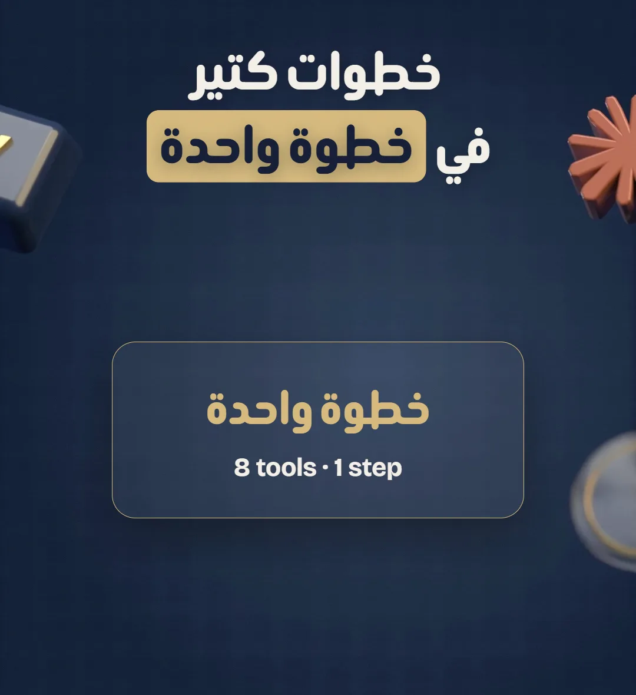
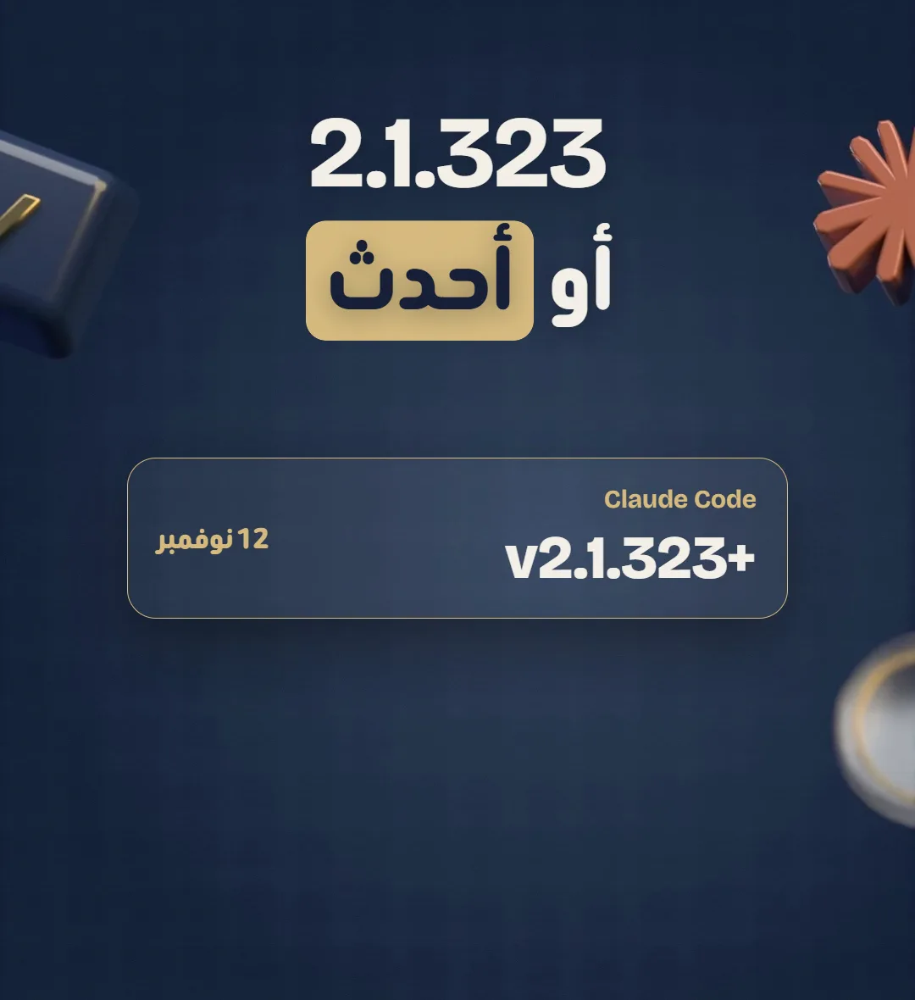
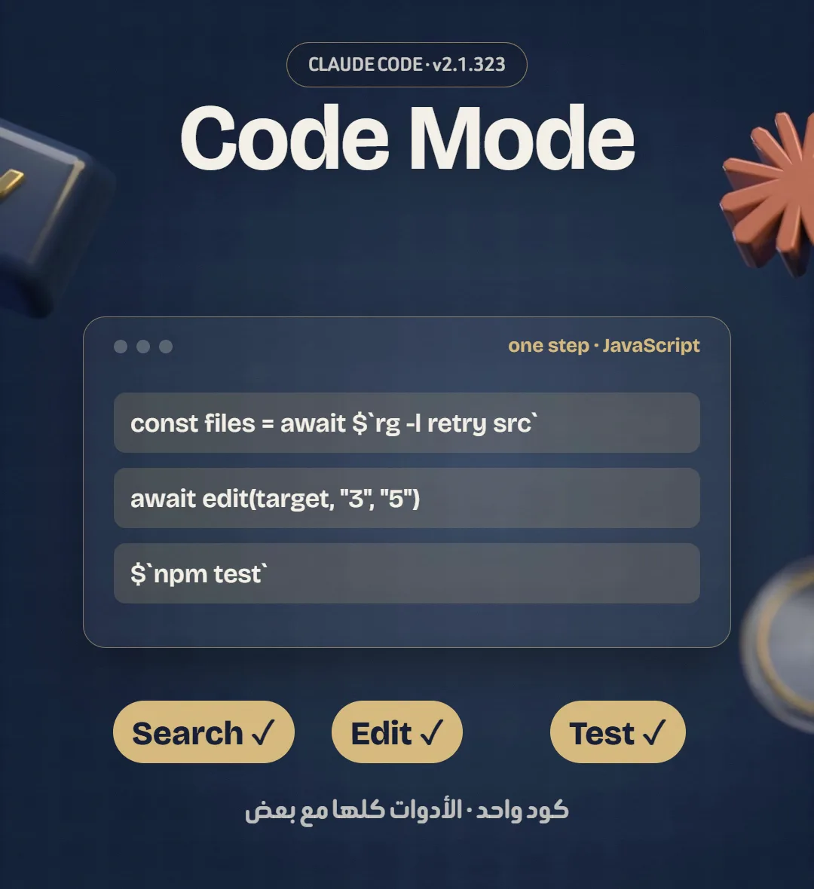
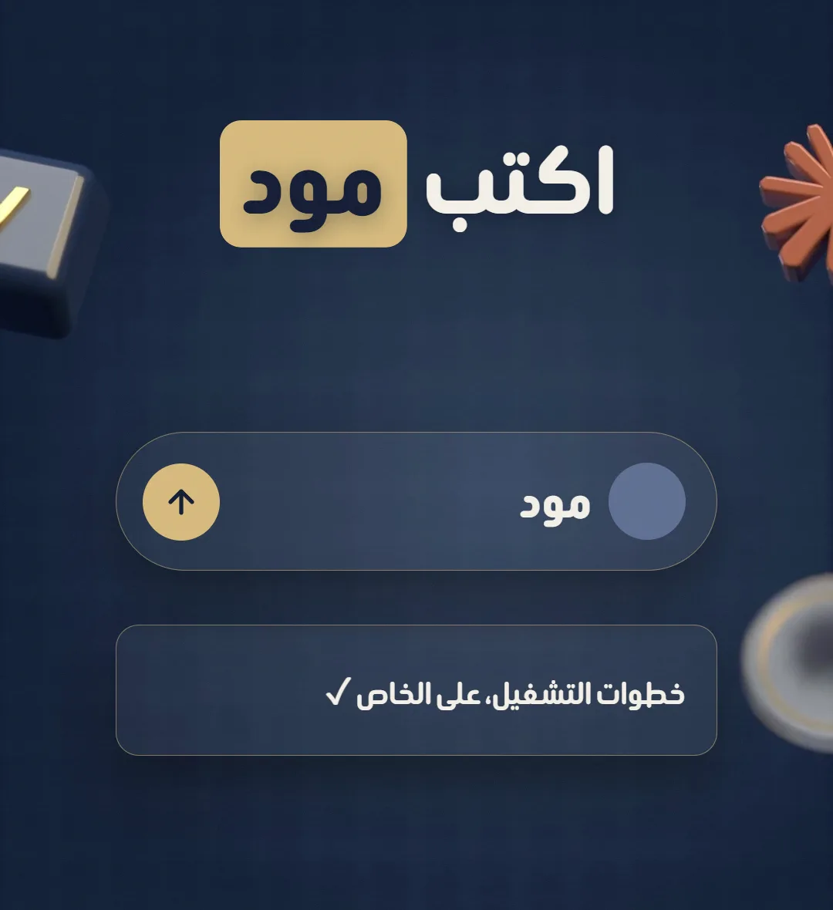

خطوات كتيــرفي خطوة واحـــدة
Code Mode ميزة تجريبية جديدة في Claude Code (من نسخة 2.1.323، 12 نوفمبر 2026): بدل ما Claude يطلب كل أداة لوحدها ويستنى نتيجتها، بيكتب كود JavaScript واحد يشغّل الأوامر مع بعض ويرجّعله اللي محتاجه بس. شغّلها بالخطوات دي.


- 01
الخبر بالظبط
في صفحة الإصدارات الرسمية، نسخة 2.1.323 (12 نوفمبر) فيها: «Added Code Mode, an experimental opt-in in which Claude writes JavaScript to call its tools». يعني Claude بدل ما يعمل Read وبعدين Search وبعدين Edit واحدة واحدة، بيكتب كود واحد يعملهم، وممكن يشغّل أوامر في نفس الوقت.
صفحة الإصدارات على GitHub ↗
من الريل: 8 أدوات بقوا خطوة واحدة - 02
حدّث لـ 2.1.323
اعرف نسختك بالأمر الأول. لو أقل من 2.1.323 اعمل claude update. لو التحديث مش موصّلك (قناة stable لسه ورا)، غيّر القناة لـ latest من /config. الميزة محتاجة النسخة الـ native من Claude Code، واشتراك Claude أو حساب Console.
claude --version claude update
من الريل: محتاجة 2.1.323 أو أحدث، ولسه تجريبية - 03
شغّل Code Mode
الميزة مقفولة افتراضيًا. شغّلها بمتغيّر البيئة ده وإنت بتفتح claude في التيرمنال (على ويندوز PowerShell استخدم السطر التاني). أول مرة هيسألك: اختار «Yes, turn on Code Mode»، وهيظهرلك سطر إن Code Mode (experimental) شغالة. ولو عايزها دايمًا، حط المتغيّر في ~/.claude/settings.json جوّه env.
CLAUDE_CODE_EXPERIMENTAL_CODE_MODE=1 claude $env:CLAUDE_CODE_EXPERIMENTAL_CODE_MODE = "1"; claude
من الريل: كود واحد بيشغّل البحث والتعديل والاختبار - 04
جرّبها على مهمة كبيرة
هي بتفرق في المهام اللي فيها أدوات كتير: تعديل بيتكرر في ملفات كتير، بحث محتاج فلترة، أو أوامر تشتغل مع بعض. جرّب البرومبت ده في مشروع تعرفه، وبعدين دوس Ctrl+O عشان تشوف الكود اللي Claude كتبه.
Read every Markdown file in this project and list the links that point to local files that don't exist.
اكتب «مود» تحت الريل والخطوات توصلك
نصايح صغيرة
- Code Mode بتشتغل في التيرمنال بس: مش في تطبيق Claude ديسكتوب ولا VS Code ولا مع -p.
- مش هتشتغل مع Remote Control ولا Claude in Chrome ولا computer use. ولو عايز ترجع لجلسة Code Mode لازم المتغيّر يفضل 1.
- تقفلها بإنك تشيل المتغيّر أو تخليه 0. وهي تجريبية، يعني ممكن تتغيّر أو تتشال في أي إصدار.
عايز حد يعملهولك؟
مش فاضي تتعلم وتعمل بنفسك؟ أنا بعمل ريلز لبراندك بنفس الطريقة اللي بشرحها هنا.